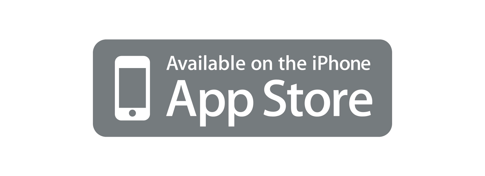

UGotFlagged
UGotFlagged is a service that allows you to communicate and share your frustration, admiration, or warnings with other drivers. Report bad drivers by flagging them using your cell phone. Posts are instantly shared with other users using Push technology. 
Logger!
This long awaited app is finaly here!!! Log your workout sessions using this simple yet powerful iPad application. Create your own lifting programs and workouts. Allows for easy replications of workouts. No longer do you need to create a workout from scratch each time. Auto calculations of 1RMs and total lbs lifted! Use the calendar to easy access to your workouts. Email workouts!! Automatic graphing of your lifting progress. Just select a workout and see the graph (requires Internet access).
TripCase
Named "Best Travel App" by Business Week, and featured in USA Today, CNET and The Wall Street Journal. The best travel app on the iPhone for:
- Aggregating and organizing the maze of travel information that goes along with a trip
- Getting real-time flight alerts and critical travel updates before and during your trip
- Sharing travel information with designated friends, family and coworkers
- And, much more.